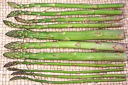
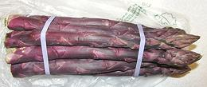
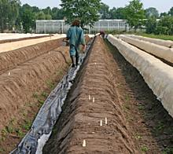

SAFARI
Users
- General & History
- Working with Asparagus - buying, storing, and cooking.
- Varieties
- Health & Nutrition
- Links
General & History
The ancient Romans were very fond of asparagus, and they knew how to cook it. One writer described in a recipe that it should be "cooked just for moments, like asparagus". Louis XIV of France had special greenhouses constructed so he could have asparagus all year. Today asparagus has been carried worldwide and it even appears in Asian stir fries. Because it fetches a good price it has become a major export crop for some countries.
Growers of note - and market seasons are:
Peru
(Sep - Dec and year round) is the second largest asparagus grower. About 35% of the crop is green asparagus for export to the U.S. while nearly all the rest is white asparagus processed into cans and jars for shipment to Europe. An increasing amount of fresh white asparagus is being shipped to the U.S..Mexico
(Dec - Apr and year round except May) is the third largest grower with the entire crop being green asparagus, nearly all shipped to the U.S. where some is transshipped to Japan.United States
is the fourth largest grower and by far the world's major importer. U.S. exports are small with most going to Canada and some to Japan and Switzerland.- California (Jan - May, small crop Sept - Oct) - 75%+ of U.S. crop, all green, nearly all fresh.
- Washington (Apr - Jun) - all green, some pickled and frozen.
- Michigan (May - Jun) - all green - 15% fresh, 38% frozen, 62% canned.
China
is by far the largest grower of asparagus. Nearly the entire crop is white asparagus, processed into cans and jars and shipped to Europe and worldwide, but almost none to the U.S. where green asparagus is favored.Spain
is Europe's largest producer followed by Germany and Greece. Nearly all is white asparagus.
Varieties
Green Asparagus
 Green asparagus is the people's choice in North America where very little white asparagus is consumed - and that mostly on gourmet plates in fancy restaurants. Green asparagus is preferred fresh, and pretty much the entire California, Washington and Mexican crops are shipped fresh. Michigan produces some fresh but mostly frozen and canned asparagus.
Green asparagus generally comes in the three sizes shown in the photo. Thick (center) and "pencil thin" (back) are the normal sizes. Here in California we also have a size we can call "wire thin" (front) but I'm not sure any of that size is exported. Flavor is similar for all sizes but becomes a little more intense in the thinner sizes, which also are a little more fibrous. Which size you choose will depend on the recipe you choose (or the recipe may depend the size you can get). Thick asparagus is often peeled for the largest 1/3, pencil thin and wire thin never.
The photo samples were 9 inches long with the thick about 0.7 inches
diameter (about average) the "pencil thin" about 0.4 inches and the
"wire thin".25 inches and less diameter. All measurements were made at
the thick end.
Purple Asparagus
 Purplish green in color, little of this variety is grown in the U.S. but it has some popularity in Europe. It may be a nice color variation for raw vegetable plates, but like purple string beans it turns green when cooked. Definitely not not worth the extra price if you'll be cooking it. Photo by Willis Lam distributed under license Creative Commons Attribution-ShareAlike v2.0 Generic.
White Asparagus
 White asparagus is the same plant as green, but it's grown with a high pile of soil or mulch over it or tented with plastic sheeting. Since it sees no light it doesn't develop chlorophyll, but it also develops a fibrous skin so it is generally peeled. Photo © i0134 .
White asparagus is the choice of Europe where very little green asparagus is consumed. Germany is the largest and most enthusiastic consumer of asparagus in Europe and has been increasing production, particularly grown under plastic sheeting for early harvest.
White asparagus has little flavor compared to green. Chefs like it, I think, because it provides body with almost no flavor to interfere with their most delicate sauces. It has to be cut rather short as well as peeled because the base is very fibrous. Personally I think this stuff is beyond redemption, but I'm not a gourmet, a gourmet chef or a German so what would I know?
The most commonly available white asparagus in California is from Peru,
7 inches long and 0.45 inches diameter - a size called "Standard".
Large, Extra Large and Jumbo are also listed but I think
those sizes go to restaurants. Standard and large are PLU #4522, Extra
Large and Jumbo #4523.
Health & Nutrition
Asparagus
is a good source of vitamins A, C, B6, thiamin, folic acid, potassium, and obviously fiber (especially if you don't peel the lower stems). While low in sodium and calories, it is a rich source of rutin and a good source of glutathione (GSH), a powerful antioxidant and anti-carcinogen. It has no fat or cholesterol.Asparagus is a powerful diuretic and has been used medicinally for that purpose since ancient times. It also contains sulphur compounds that cause a noticeable odor in the urine - but many (as many as 60%) are genetically unable to smell this odor at all. The sulphur compounds have no known adverse health effects, in fact, sulphur is often deficient in the average diet.
Links
- 2 - Asparagus Production - Index Mundi